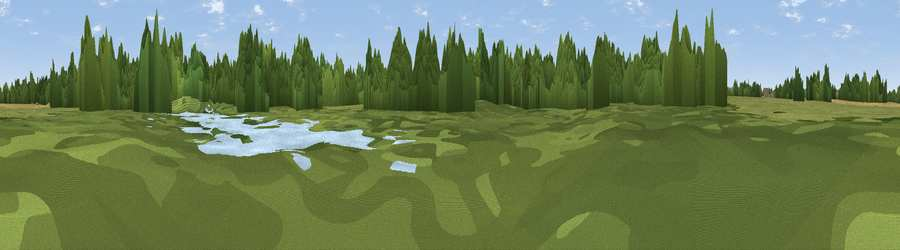

Viewpoint near Drayton Basset
#46186 in England · top 97% of its area beats it · near Drayton BassetThe view, rendered

A 360° render of this exact spot computed from the terrain model, tree cover and land cover — summer colours, afternoon light, calibrated against photographs of famous viewpoints. Real trees, hedges and buildings will differ in detail.
The panorama
Grey silhouette: terrain skyline in each direction (720 bearings, Earth curvature and refraction included). Dashed green: skyline with trees (+15 m) and buildings (+8 m) as obstacles. Blue strip: how far the ground is visible on each bearing.
Where the view opens
Wedge length = distance to the farthest visible ground on that bearing (vegetation-aware). Rings at 10, 25 and 50 km.
What fills the view
76% woodland · 14% grassland · 7% cropland · 2% water · 1% built-up
Angular shares of the visible panorama (visual magnitude), not map area. Landscape diversity 0.35 (0–1 Shannon).
Key numbers
More beautiful places nearby
The staircase of upgrades: each row has a higher view potential than everything closer. Driving times are estimates from straight-line distance, calibrated against real road routing — check an actual route before setting out.
| Place | Direction | Drive | Score |
|---|---|---|---|
| Viewpoint near Drayton Basset | NE · 2 km | ~4 min | 37.7 |
| Viewpoint near Wood End | E · 4 km | ~9 min | 39.6 |
| Viewpoint near Dordon | ENE · 5 km | ~11 min | 57.0 |
| Viewpoint near Hopwas | NNW · 6 km | ~13 min | 57.8 |
| Viewpoint near Ansley Common | ESE · 11 km | ~21 min | 69.0 |
| Viewpoint near Streetly | W · 14 km | ~25 min | 69.5 |
| Viewpoint near Stanton under Bardon | ENE · 30 km | ~47 min | 76.0 |
| Viewpoint near Woodhouse Eaves | ENE · 35 km | ~53 min | 77.7 |
52.58515, -1.70796 · source: osm viewpoint · position refined by local search. Computed location — check access rights before visiting.